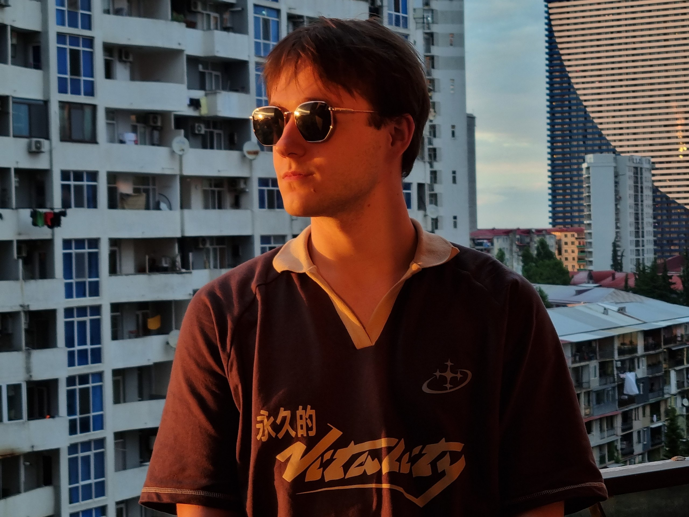

Software Engineering
Production-minded Python and Go: automation, backend services, APIs, desktop tools, databases, testing and CI/CD.
PythonGoPostgreSQLLinuxDockerKubernetes
Software • Embedded • Education
Software Engineer with commercial Python & Go experience, moving deeper into Embedded Systems, ESP32 & Robotics — and a STEM educator who loves turning complex ideas into practical projects.
I build software systems.

01 / PROFILE
I like work where software leaves the screen and starts affecting real people, devices and learning.
Production-minded Python and Go: automation, backend services, APIs, desktop tools, databases, testing and CI/CD.
Growing hands-on in microcontrollers, electronics and robotics — currently centered on ESP32, C/C++ and device-level experimentation.
Physics, Computer Science, Mathematics and programming for different ages — from Scratch and Roblox to Python and project work.
02 / EXPERIENCE
Physics, Computer Science and Mathematics, plus Scratch, Roblox Studio/Lua and Python. Designing project-based technical education across software, AI, game development, robotics, electronics and embedded systems.
Production Go microservices in a Kubernetes-native environment: service tests, refactoring, gRPC, PostgreSQL, Redis and distributed backend systems.
Internal automation, PyQt/PySide desktop tools, integrations, CI/CD, APIs, databases and analytical reporting.
Python, data & ML, APIs, automation, Django, AI/LLM integrations, Unity, Godot, Roblox Studio and Blender. Learning materials and student projects.
03 / SELECTED PROJECTS
Selected public work from my GitHub — backend, automation and AI-oriented experiments.
Dockerized Go service that collects job postings, filters and stores them in PostgreSQL and sends new matches to Telegram.
Backend + CLI system for groups, students, lessons, attendance and payments.
Local AI knowledge-management experiment with LLM workflows, vector search and structured storage.
Windows desktop utility for batch archive extraction with sequential or parallel execution and UI task status.
Prototype for searching the web, structuring information and automating browser-oriented tasks.
04 / TOOLBOX
Python and Go are my strongest professional languages; embedded is the direction I am actively building.
05 / CONTACT
Based in Batumi, Georgia. Open to software, embedded/robotics and technical education opportunities — remote or relocation.